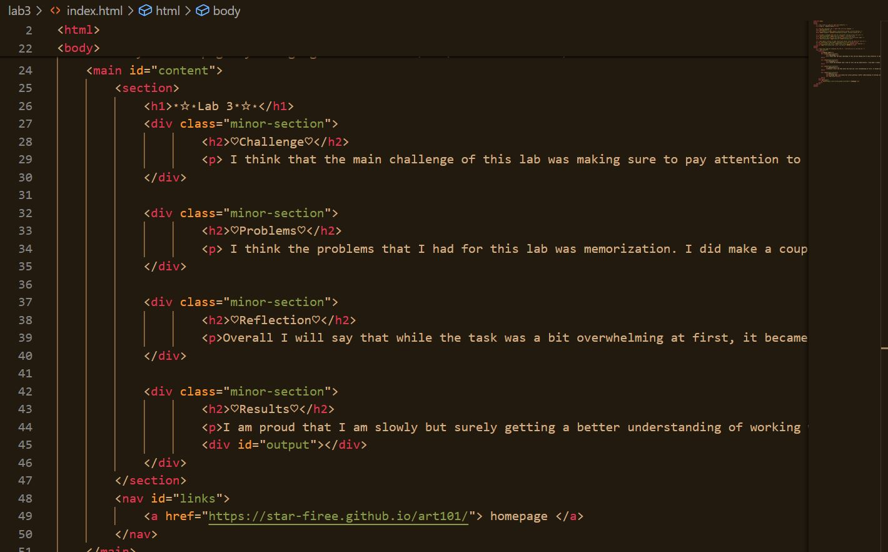
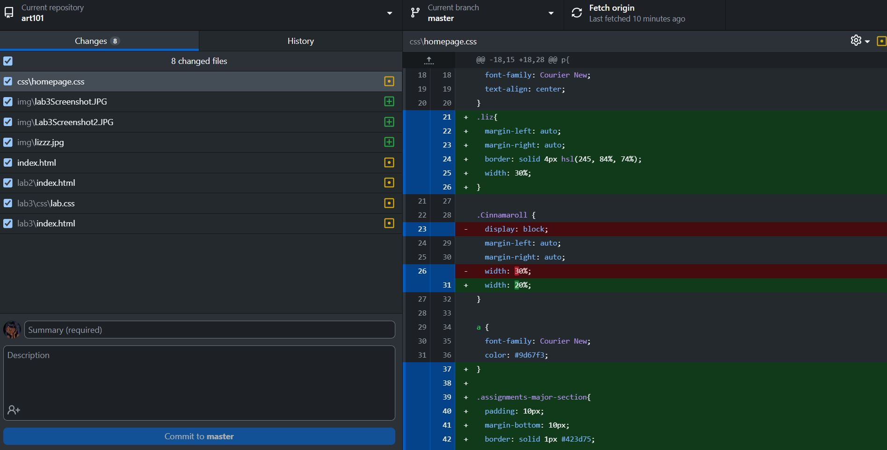

⭑☆⋆Lab 3⭑☆⋆
♡Challenge♡
I think that the main challenge of this lab was making sure to pay attention to small details that were written for the assignment. I made sure to reread a couple of the tasks in the lab to make sure nothing went overlooked.
♡Problems♡
I think the problems that I had for this lab was memorization. I did make a couple of errors when typing the code. I think that I just need to get used to working with the code and the variables that I already know.
♡Reflection♡
Overall I will say that while the task was a bit overwhelming at first, it became easier as soon as I fully understood each task and what I had to complete for the assignment.
♡Results♡
I am proud that I am slowly but surely getting a better understanding of working with HTML and CSS. I wish there was more time to work on designing webpages but I am excited to see what other projects my Professor has in store for the class.
screenshot of ART101 folder layout
screenshot of lab 3 index HTML file
screenshot of html file being uploaded to the github desktop